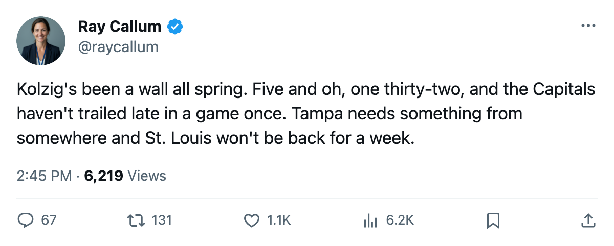

RECAP: Washington 3, Tampa Bay 1 -- the Capitals are one win from a sweep
Four second-round games, three series at 2-1, and one club at 3-0 with the series shifting back to its home building.
 Ray CallumSenior correspondent · Home Ice Network
Ray CallumSenior correspondent · Home Ice Network
Four second-round games since Tuesday.  Washington Capitals leads its series 3-0.
Washington Capitals leads its series 3-0.  Pittsburgh Penguins,
Pittsburgh Penguins,  Dallas Stars and
Dallas Stars and  Edmonton Oilers each lead 2-1.
Edmonton Oilers each lead 2-1.
Washington Capitals won 3-1 in Tampa on Saturday and 4-3 in overtime on Sunday. The Capitals scored 287 goals in the regular season, the most in the conference behind  Toronto Maple Leafs.
Toronto Maple Leafs.  Jaromir Jagr91 has 11 points in 6 games.
Jaromir Jagr91 has 11 points in 6 games.  Olaf Kolzig92 is 5-0 with a 1.32 GAA and a .935 save percentage.
Olaf Kolzig92 is 5-0 with a 1.32 GAA and a .935 save percentage.
 Tampa Bay Lightning lost
Tampa Bay Lightning lost  Martin St. Louis87 to a head injury sometime between 2005-04-23 and 2005-04-26. The return date is 2005-05-04. He had 6 points in 8 games this spring.
Martin St. Louis87 to a head injury sometime between 2005-04-23 and 2005-04-26. The return date is 2005-05-04. He had 6 points in 8 games this spring.
 Mario Lemieux85 has 8 points in 8 games, and Pittsburgh Penguins leads Toronto Maple Leafs 2-1 after a 3-2 win on the 24th. The Penguins survived 61 injury spells this season.
Mario Lemieux85 has 8 points in 8 games, and Pittsburgh Penguins leads Toronto Maple Leafs 2-1 after a 3-2 win on the 24th. The Penguins survived 61 injury spells this season.  Johan Hedberg88 is 4-3 with a 2.00 GAA and a .911 save percentage in 7 playoff games.
Johan Hedberg88 is 4-3 with a 2.00 GAA and a .911 save percentage in 7 playoff games.
Toronto Maple Leafs is 2-1 up. The next meeting is at Pittsburgh Penguins on 2005-04-28.
Dallas Stars took the third game 4-1 on the 24th and leads  Phoenix Coyotes 2-1.
Phoenix Coyotes 2-1.  Jere Lehtinen82 has 9 points in 6 games.
Jere Lehtinen82 has 9 points in 6 games.  Marty Turco93 is 5-1 with a 1.43 GAA and a .919 save percentage.
Marty Turco93 is 5-1 with a 1.43 GAA and a .919 save percentage.
Phoenix Coyotes won 3-1 in the second game to even the series at 1-1.  Mike Johnson81 has 12 points in 9 games.
Mike Johnson81 has 12 points in 9 games.  Sean Burke86 is 5-3 with a 2.21 GAA and a .914 save percentage. Game 4 is at Phoenix Coyotes on 2005-04-28.
Sean Burke86 is 5-3 with a 2.21 GAA and a .914 save percentage. Game 4 is at Phoenix Coyotes on 2005-04-28.
 Mike York82 has 12 points in 8 games as Edmonton Oilers leads
Mike York82 has 12 points in 8 games as Edmonton Oilers leads  Mighty Ducks of Anaheim 2-1. Edmonton won the third game 2-1 on the 25th. Game 4 is at Mighty Ducks of Anaheim on 2005-04-29.
Mighty Ducks of Anaheim 2-1. Edmonton won the third game 2-1 on the 25th. Game 4 is at Mighty Ducks of Anaheim on 2005-04-29.
The week ahead
Dallas Stars at Phoenix Coyotes, Pittsburgh Penguins at Toronto Maple Leafs on 2005-04-28. Edmonton Oilers at Mighty Ducks of Anaheim, Tampa Bay Lightning at Washington Capitals on 2005-04-29.
